TFT Panel — user guide
TFT Panel turns a 7" touch screen (Elecrow CrowPanel 7" or Waveshare ESP32-P4 7B) into a lyrics screen for the music you play with Roon: the words of the song scroll in time with the music, with the cover, and you can pause, skip, change the volume or the zone with a touch.
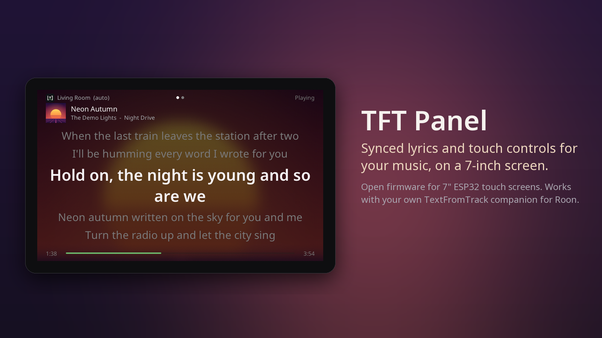
All pictures in this guide come from the panel itself, in its showcase mode: the song, lyrics, zones and cover are invented.
What you need
- One of these screens, and a USB-C cable that carries data:
- Elecrow CrowPanel ESP32 Display 7.0" (DIS08070H), board V3.0;
- Waveshare ESP32-P4-WIFI6-Touch-LCD-7B (1024×600).
Other screens are not supported, even look-alikes with the same ESP32-P4 chip (for example the Guition JC1060P470C): their display needs different settings, and the installer would give them the Waveshare firmware. Their screen would stay dark. - A Roon system, and the free TextFromTrack companion running on a computer of the same network: it finds the lyrics and tells the panel what plays. - Your Wi-Fi network name and password (2.4 GHz).
1. Install the firmware (once)
- On a computer, open the web installer in Chrome or Edge.
- Connect the panel with the USB-C cable — on the Waveshare, the port marked USB 1.1 — click Install, pick the serial port and confirm. The installer recognises the screen and picks its firmware. It takes about 3 minutes on the CrowPanel, about a minute on the Waveshare.
- CrowPanel: the port is called USB Serial, CH340 or usbserial.
- Waveshare: USB JTAG/serial debug unit or usbmodem.
- CrowPanel on Windows: if no port shows up, install the CH340 driver and plug the panel again.
After this, updates come over Wi-Fi (see Updates).
2. Connect it to your Wi-Fi
On its first start the panel shows two QR codes and a button. Two ways to go on:
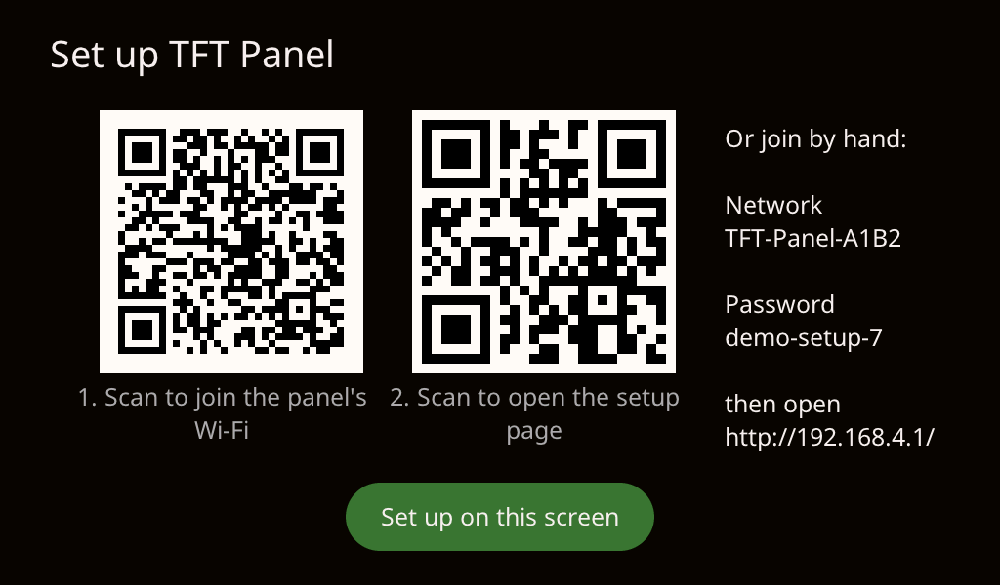
On the panel itself — tap Set up on this screen. The panel lists the Wi-Fi networks it hears, strongest first; tap yours, type its password on the keyboard (Show reveals it) and tap Connect. An open network needs no password.
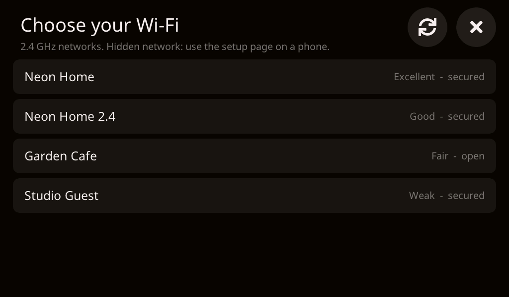
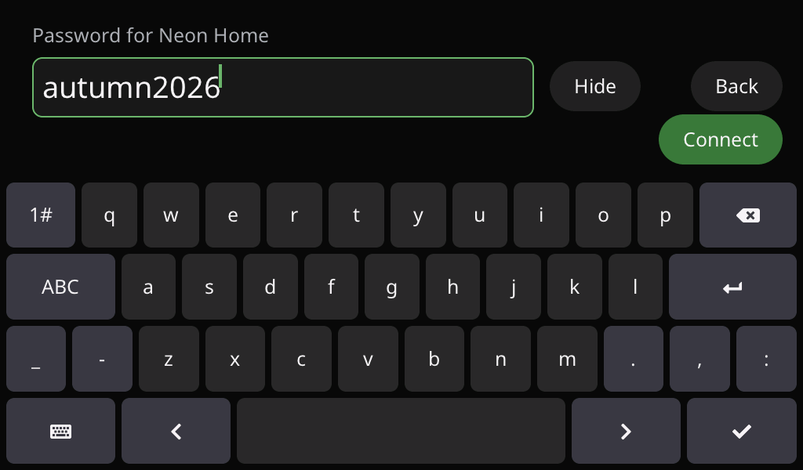
With a phone — useful for a hidden network, or to enter the companion's address:
- Scan the first code with your phone: it joins the panel's own network.
- Scan the second one: the setup page opens and lists the networks the panel hears. Tap yours, type its password, Save. A network that is not listed can be typed by hand.
The panel restarts, joins your network and finds the companion by itself. Only 2.4 GHz networks work (most routers offer both). To move the panel to another network later: Settings > Wi-Fi > Change.... If the companion is on another network segment, its address (and its access token, if you set one) can be typed on the same setup page.
3. Lyrics and cover
The panel follows the zone that is playing. The current line is large, the lines around it dimmed; they slide up as the song goes.
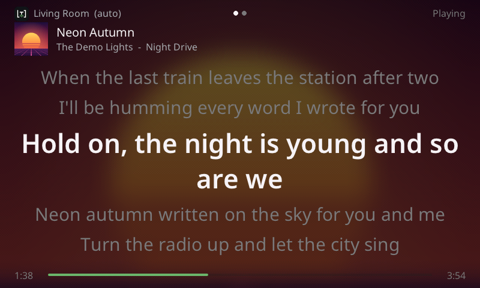
Swipe left or right to switch to the cover view, and back. The panel remembers your choice. A song without lyrics shows the cover view by itself, and returns to the lyrics as soon as there are some.
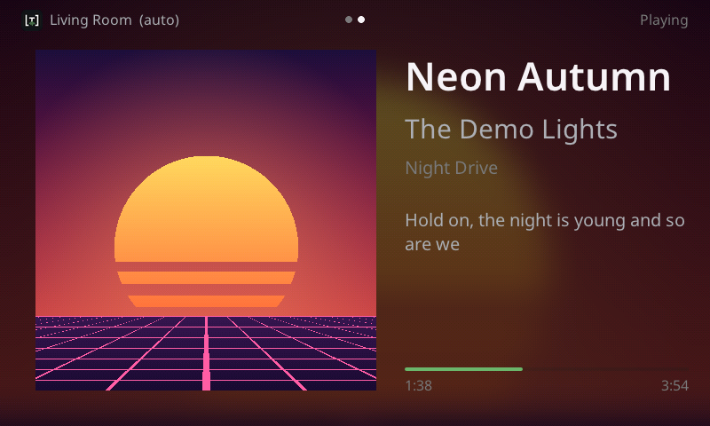
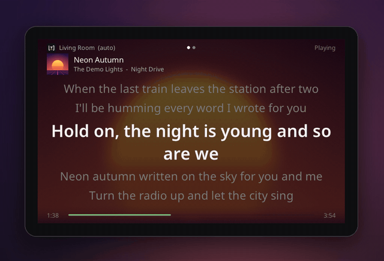
4. Controls
Tap the screen to show the controls (they hide after a few seconds): zone, previous, play/pause, next, volume − / +, settings.
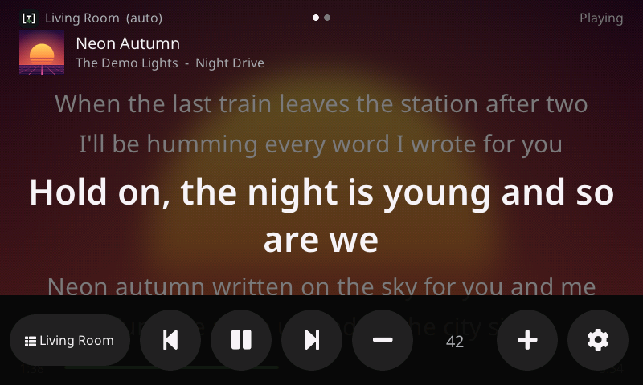
- Zone: follow the playing zone (auto), or stay on one zone.
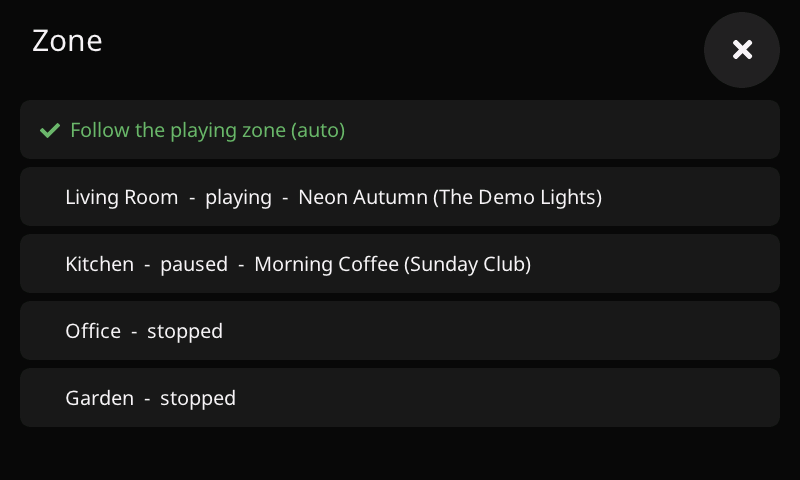
- Volume: tap the number between − and + for a slider and Mute.
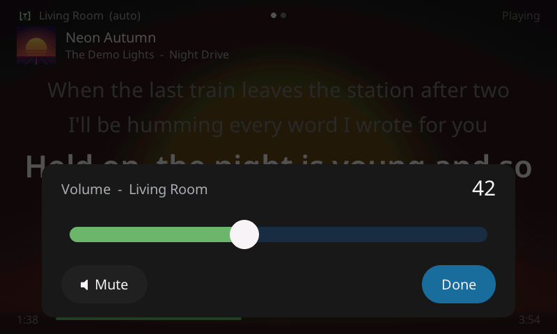
- Lyrics timing: if the lyrics run early or late for a song, press and hold the lyrics, then Earlier / Later (by 0.25 s) or Reset. It is saved for that song.
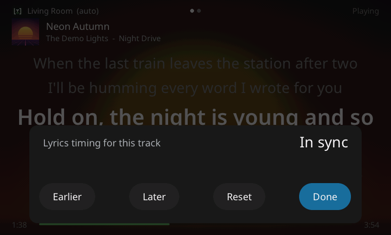
Find music
The controls bar has a folder button: the music library (both screens, since v0.1.17 on the CrowPanel).
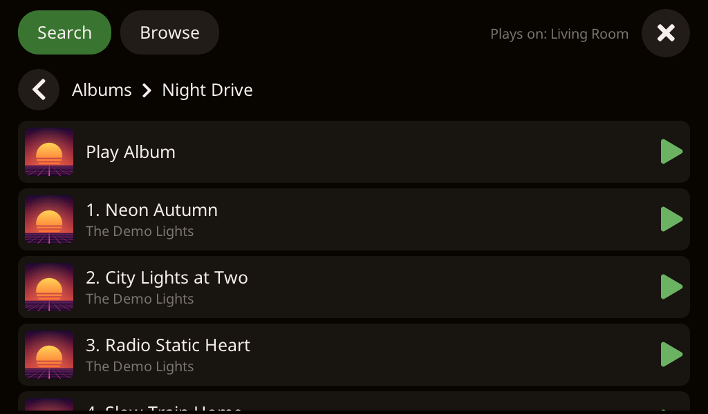
- Search: the green cursor blinks in the field; type an artist, album or track on the keyboard, then Search. The results come by kind (artists, albums, tracks…); tap one to open it.
- Browse: Roon's own menus — Library (artists, albums, tracks, composers, tags), playlists, radio, genres.
- ◀ goes back one level; Show more loads the rest of a long list.
- A row with a green ▶ can be played: tap it and choose Play Now, Add Next, Queue or Start Radio. It plays on the zone shown at the top right (Plays on: …), the one the panel follows; pick another zone with the zone button first.
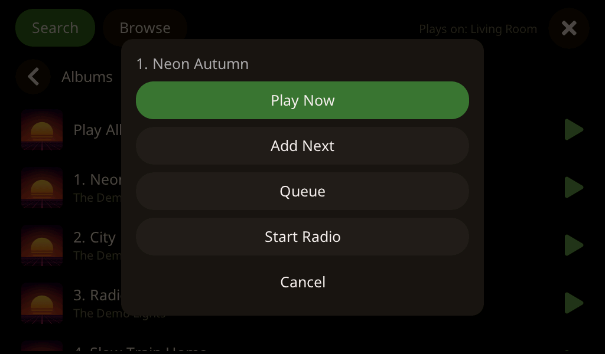
Browsing from the panel does not move what Roon's other apps or the companion's web player are showing.
From what is playing
On the cover view, the artist and the album under the title are tappable: the artist opens that artist's albums, the album opens its track list, ready to play. When the name is not exactly one thing in your library — several artists on a track, an album title shared by other records — the panel shows what it found and lets you choose rather than opening a guess.
5. Settings
The gear button opens the settings: brightness, colour warmth, when the screen turns off, how far ahead the lyrics show, the blurred cover background, smooth scrolling, the idle clock and its time zone, the zone, forgetting the Wi-Fi, the firmware version and updates.
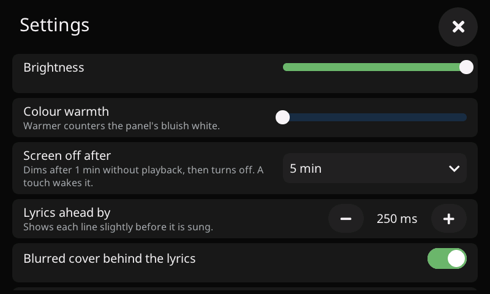
Colour warmth: this panel's white is bluish. Colour test shows white, greys and colours with a live slider: move it until the white looks neutral to you.
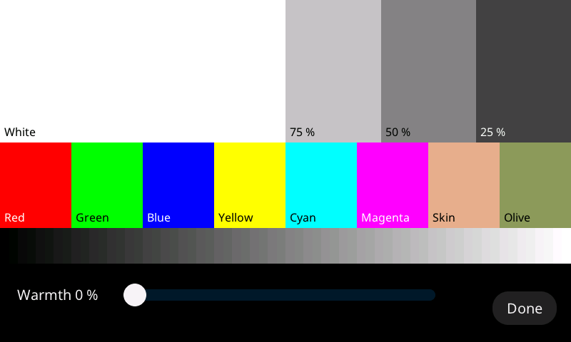
6. When nothing plays
After a minute without music the screen dims and shows a clock; it turns off after the delay chosen in the settings. A touch, or music starting, wakes it.
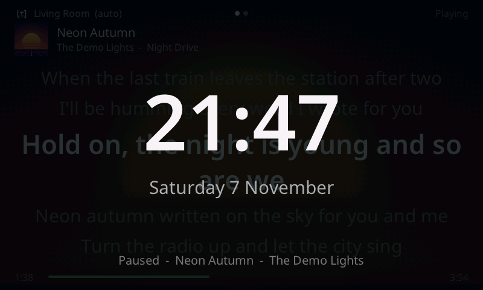
Updates
The panel looks for a new version every day. When there is one, Update appears at the top:
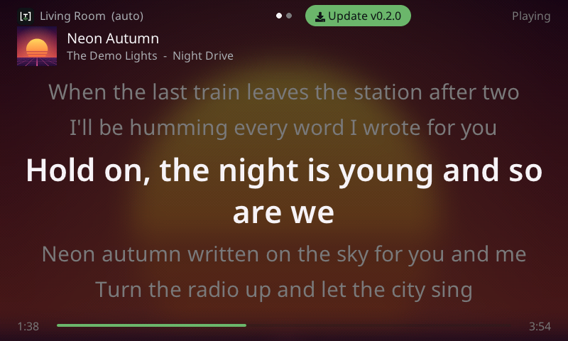
Tap it and confirm. The panel downloads the update, checks it, and restarts (about a minute). Don't unplug it meanwhile. If the new version does not start properly, the panel goes back to the previous one by itself.
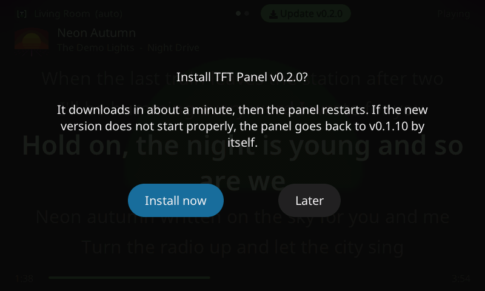
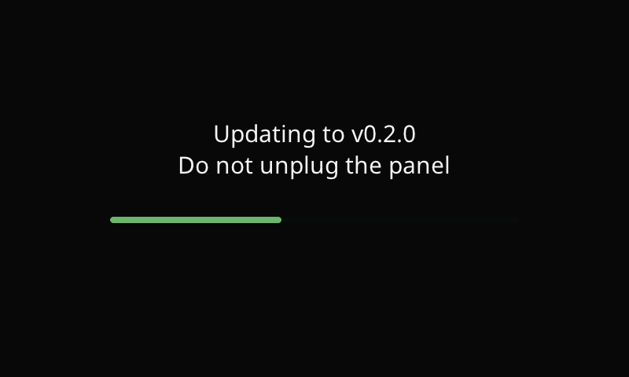
From a computer instead
Open http://tft-panel-xxxx.local/update (the name is shown in the settings, under About),
choose a firmware file, and type the 6-digit code the panel shows:
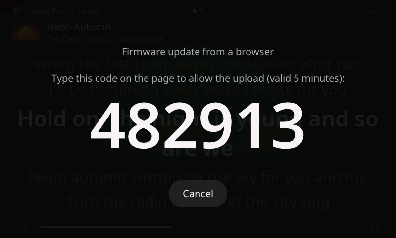
Troubleshooting
| You see | Do this |
|---|---|
| The setup QR codes come back | The panel cannot join your Wi-Fi for a minute: check the password, or that the network is 2.4 GHz. |
| "Looking for the TextFromTrack companion" | Start the companion on its computer; same network as the panel. |
| "No lyrics found for this track" | The companion found none; the cover view shows instead. |
| Lyrics early or late for one song | Press and hold the lyrics, adjust Earlier / Later. |
| Lyrics early or late for every song | Settings → Lyrics ahead by. |
| The screen looks bluish or yellowish | Settings → Colour test, move the warmth slider. |